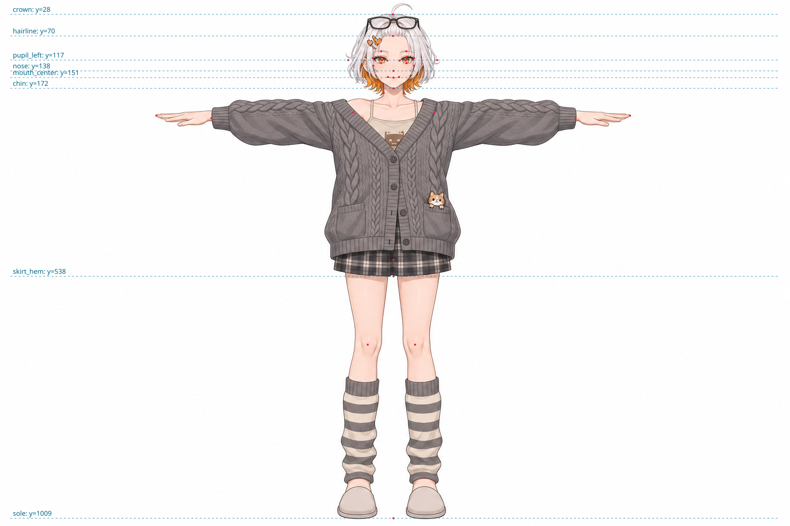
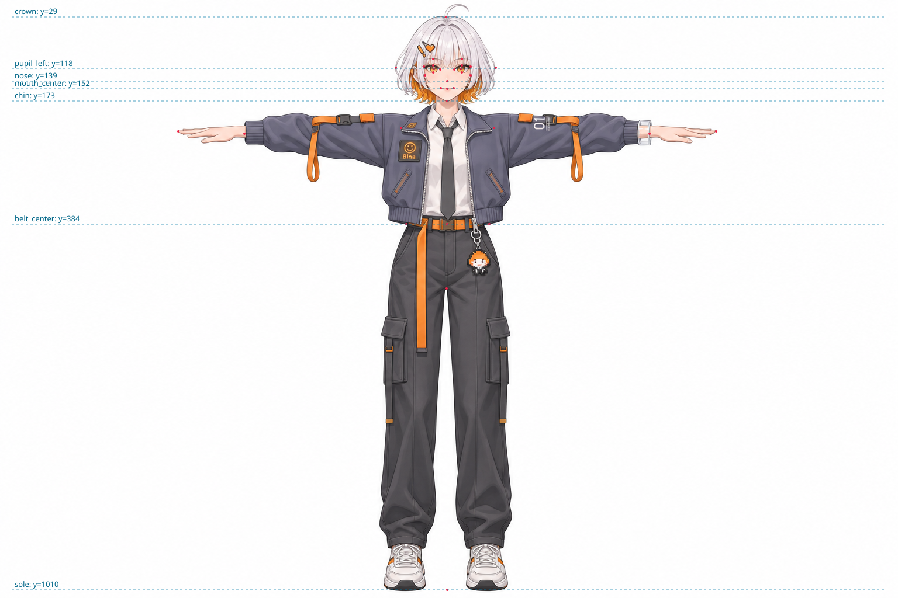
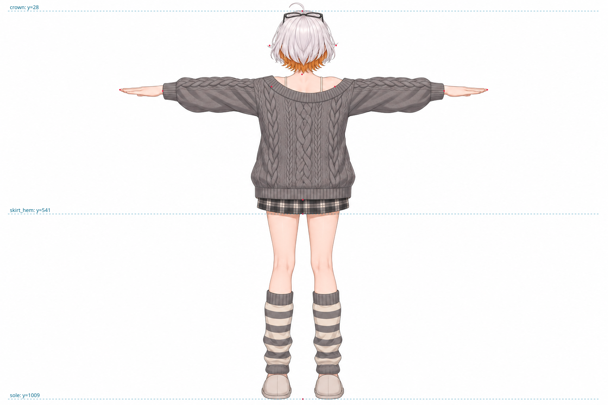
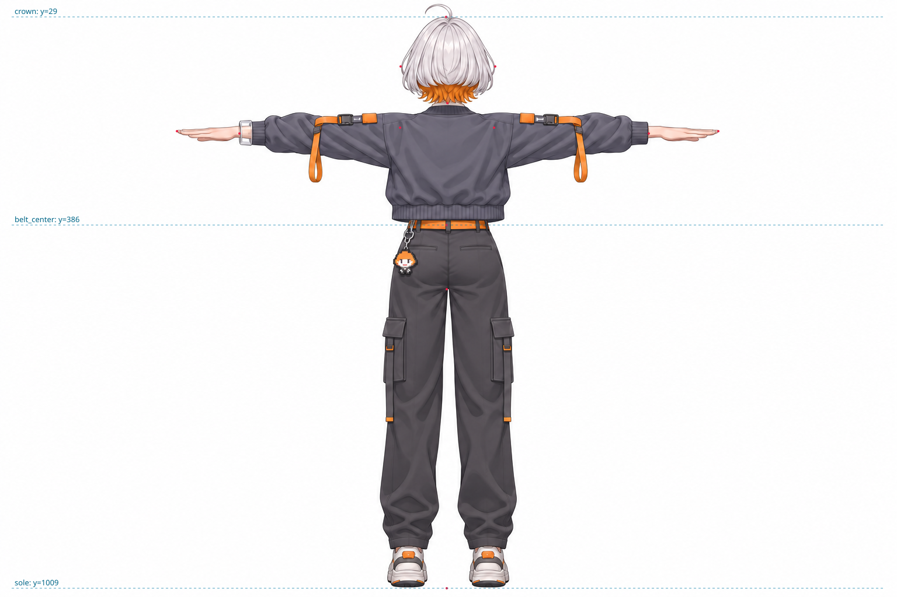
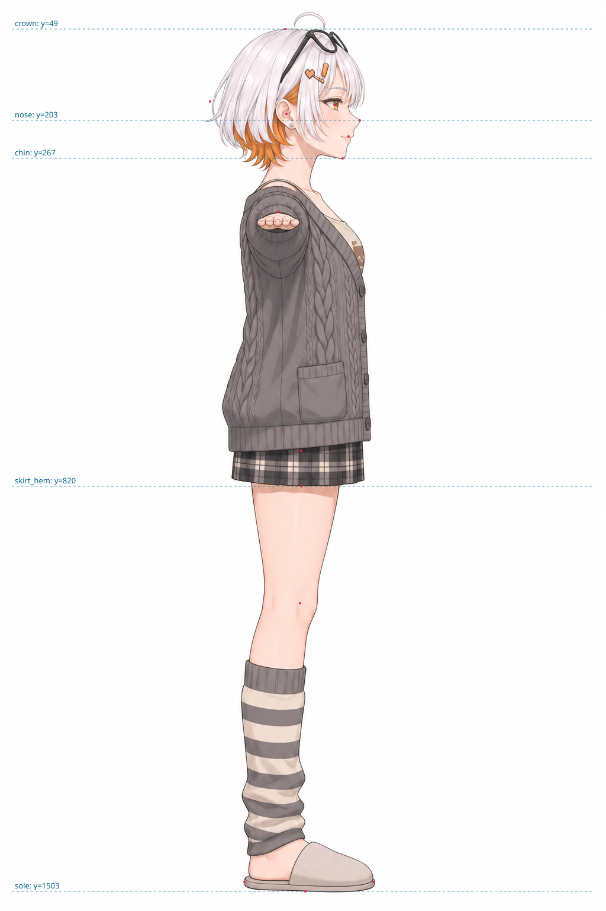
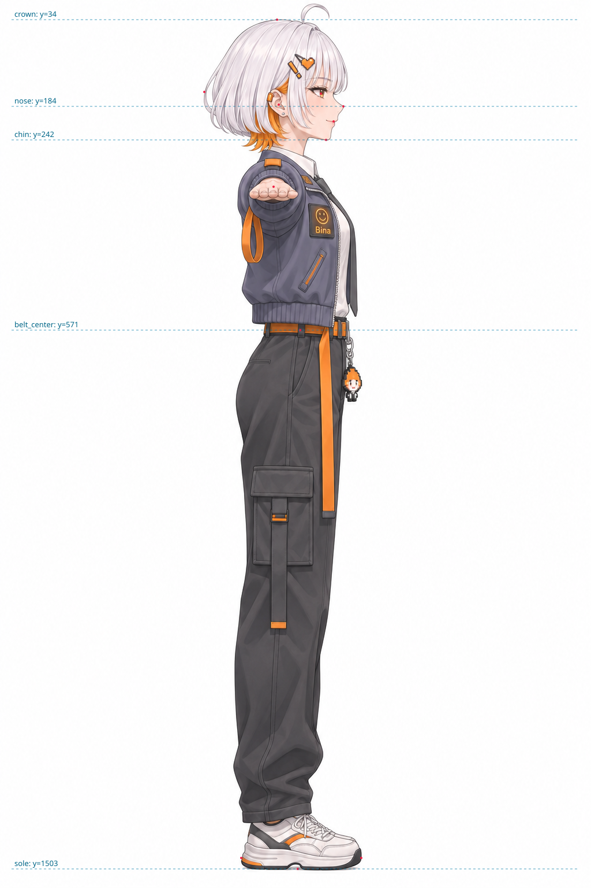

仅测量，不生成、不修改模型。坐标取原图像素，人工标点后计算；正面五官约 ±2 px，身体轮廓约 ±4 px。头顶不含呆毛和眼镜；全高包含鞋底。红点为已观测坐标，蓝线为关键高度；悬停红点可读坐标。遮挡点记为 null。
旧截图测量结果不作为依据。肩关节藏在宽松衣物内，仅估计；衣服下摆、腰带和裤缝不代表人体骨点。
| 视图 | 全高 px | 头高 px | 头高/全高 | 头身数 |
|---|---|---|---|---|
| casual-front | 981 | 144 | 0.146789 | 6.8125 |
| work-front | 981 | 144 | 0.146789 | 6.8125 |
| casual-back | 981 | 遮挡 | — | — |
| work-back | 980 | 遮挡 | — | — |
| casual-side | 1454 | 218 | 0.149931 | 6.6697 |
| work-side | 1469 | 208 | 0.141593 | 7.0625 |
侧面与正面的头身比并不完全相同，不能把三张图当成严格正交的工程图。以日常装正面作为日常模型的主基准，侧面提供轮廓和前后深度约束；工作装另行保留数据。
生成/绑定约束：全身统一等比缩放；脸部用瞳孔中线与脸宽归一化。不得单独放大头、拉长脸或移动五官来适配素材。

{
"pixels": {
"illustrated_shod_height": 981,
"head_height": 144,
"face_height_hairline_to_chin": 102,
"visible_face_width_at_cheeks": 79,
"hair_silhouette_width": 173,
"pupil_spacing": 47,
"left_eye_width": 28,
"right_eye_width": 28,
"left_eye_opening_height": 12,
"right_eye_opening_height": 12,
"mouth_width": 22,
"neck_width": 39,
"shoulder_width_estimate": 158,
"arm_span": 921,
"eye_to_nose": 21,
"nose_to_mouth": 13,
"mouth_to_chin": 21,
"brow_to_eye": 17
},
"ratios": {
"head_height_over_stature": 0.146789,
"face_height_hairline_to_chin_over_stature": 0.103976,
"visible_face_width_at_cheeks_over_stature": 0.08053,
"hair_silhouette_width_over_stature": 0.176351,
"pupil_spacing_over_stature": 0.04791,
"left_eye_width_over_stature": 0.028542,
"right_eye_width_over_stature": 0.028542,
"left_eye_opening_height_over_stature": 0.012232,
"right_eye_opening_height_over_stature": 0.012232,
"mouth_width_over_stature": 0.022426,
"neck_width_over_stature": 0.039755,
"shoulder_width_estimate_over_stature": 0.16106,
"arm_span_over_stature": 0.938838,
"eye_to_nose_over_stature": 0.021407,
"nose_to_mouth_over_stature": 0.013252,
"mouth_to_chin_over_stature": 0.021407,
"brow_to_eye_over_stature": 0.017329,
"head_count": 6.8125,
"pupil_spacing_over_face_width": 0.594937,
"left_eye_width_over_face_width": 0.35443,
"right_eye_width_over_face_width": 0.35443,
"mouth_width_over_face_width": 0.278481,
"eye_opening_height_over_eye_width": 0.428571,
"face_width_over_head_height": 0.548611,
"face_height_over_face_width": 1.291139,
"eye_level_from_hairline_over_face_height": 0.460784,
"nose_level_from_hairline_over_face_height": 0.666667,
"mouth_level_from_hairline_over_face_height": 0.794118
}
}
{
"pixels": {
"illustrated_shod_height": 981,
"head_height": 144,
"visible_face_width_at_cheeks": 78,
"hair_silhouette_width": 171,
"pupil_spacing": 47,
"left_eye_width": 28,
"right_eye_width": 28,
"left_eye_opening_height": 12,
"right_eye_opening_height": 12,
"mouth_width": 22,
"shoulder_width_estimate": 159,
"arm_span": 920,
"eye_to_nose": 21,
"nose_to_mouth": 13,
"mouth_to_chin": 21,
"brow_to_eye": 17
},
"ratios": {
"head_height_over_stature": 0.146789,
"visible_face_width_at_cheeks_over_stature": 0.079511,
"hair_silhouette_width_over_stature": 0.174312,
"pupil_spacing_over_stature": 0.04791,
"left_eye_width_over_stature": 0.028542,
"right_eye_width_over_stature": 0.028542,
"left_eye_opening_height_over_stature": 0.012232,
"right_eye_opening_height_over_stature": 0.012232,
"mouth_width_over_stature": 0.022426,
"shoulder_width_estimate_over_stature": 0.16208,
"arm_span_over_stature": 0.937819,
"eye_to_nose_over_stature": 0.021407,
"nose_to_mouth_over_stature": 0.013252,
"mouth_to_chin_over_stature": 0.021407,
"brow_to_eye_over_stature": 0.017329,
"head_count": 6.8125,
"pupil_spacing_over_face_width": 0.602564,
"left_eye_width_over_face_width": 0.358974,
"right_eye_width_over_face_width": 0.358974,
"mouth_width_over_face_width": 0.282051,
"eye_opening_height_over_eye_width": 0.428571,
"face_width_over_head_height": 0.541667
}
}
{
"pixels": {
"illustrated_shod_height": 981,
"hair_silhouette_width": 168,
"shoulder_width_estimate": 160,
"arm_span": 928
},
"ratios": {
"hair_silhouette_width_over_stature": 0.171254,
"shoulder_width_estimate_over_stature": 0.163099,
"arm_span_over_stature": 0.945973
}
}
{
"pixels": {
"illustrated_shod_height": 980,
"hair_silhouette_width": 162,
"shoulder_width_estimate": 161,
"arm_span": 927
},
"ratios": {
"hair_silhouette_width_over_stature": 0.165306,
"shoulder_width_estimate_over_stature": 0.164286,
"arm_span_over_stature": 0.945918
}
}
{
"pixels": {
"illustrated_shod_height": 1454,
"head_height": 218,
"profile_depth_hair_to_nose": 253,
"shoe_length": 218
},
"ratios": {
"head_height_over_stature": 0.149931,
"profile_depth_hair_to_nose_over_stature": 0.174003,
"shoe_length_over_stature": 0.149931,
"head_count": 6.6697
}
}
{
"pixels": {
"illustrated_shod_height": 1469,
"head_height": 208,
"profile_depth_hair_to_nose": 241,
"shoe_length": 208
},
"ratios": {
"head_height_over_stature": 0.141593,
"profile_depth_hair_to_nose_over_stature": 0.164057,
"shoe_length_over_stature": 0.141593,
"head_count": 7.0625
}
}